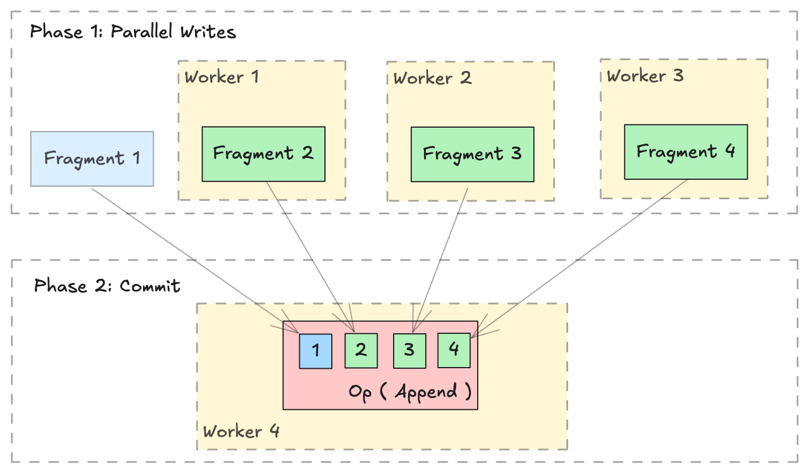

Distributed Write¶
Warning
Lance provides out-of-the-box Ray and Spark integrations.
This page is intended for users who wish to perform distributed operations in a custom manner, i.e. using slurm or Kubernetes without the Lance integration.
Overview¶
The Lance format is designed to support parallel writing across multiple distributed workers. A distributed write operation can be performed by two phases:
- Parallel Writes: Generate new
lance.LanceFragmentin parallel across multiple workers. - Commit: Collect all the
lance.FragmentMetadataand commit into a single dataset in a singlelance.LanceOperation.

Write new data¶
Writing or appending new data is straightforward with lance.fragment.write_fragments.
import json
from lance.fragment import write_fragments
# Run on each worker
data_uri = "./dist_write"
schema = pa.schema([
("a", pa.int32()),
("b", pa.string()),
])
# Run on worker 1
data1 = {
"a": [1, 2, 3],
"b": ["x", "y", "z"],
}
fragments_1 = write_fragments(data1, data_uri, schema=schema)
print("Worker 1: ", fragments_1)
# Run on worker 2
data2 = {
"a": [4, 5, 6],
"b": ["u", "v", "w"],
}
fragments_2 = write_fragments(data2, data_uri, schema=schema)
print("Worker 2: ", fragments_2)
Output:
Now, use lance.fragment.FragmentMetadata.to_json to serialize the fragment metadata, and collect all serialized metadata on a single worker to execute the final commit operation.
import json
from lance import FragmentMetadata, LanceOperation
# Serialize Fragments into JSON data
fragments_json1 = [json.dumps(fragment.to_json()) for fragment in fragments_1]
fragments_json2 = [json.dumps(fragment.to_json()) for fragment in fragments_2]
# On one worker, collect all fragments
all_fragments = [FragmentMetadata.from_json(f) for f in \
fragments_json1 + fragments_json2]
# Commit the fragments into a single dataset
# Use LanceOperation.Overwrite to overwrite the dataset or create new dataset.
op = lance.LanceOperation.Overwrite(schema, all_fragments)
read_version = 0 # Because it is empty at the time.
lance.LanceDataset.commit(
data_uri,
op,
read_version=read_version,
)
# We can read the dataset using the Lance API:
dataset = lance.dataset(data_uri)
assert len(dataset.get_fragments()) == 2
assert dataset.version == 1
print(dataset.to_table().to_pandas())
Output:
Append data¶
Appending additional data follows a similar process. Use lance.LanceOperation.Append to commit the new fragments, ensuring that the read_version is set to the current dataset's version.
import lance
ds = lance.dataset(data_uri)
read_version = ds.version # record the read version
op = lance.LanceOperation.Append(all_fragments)
lance.LanceDataset.commit(
data_uri,
op,
read_version=read_version,
)
Add New Columns¶
Lance Format excels at operations such as adding columns. Thanks to its two-dimensional layout (see this blog post), adding new columns is highly efficient since it avoids copying the existing data files. Instead, the process simply creates new data files and links them to the existing dataset using metadata-only operations.
import lance
from pyarrow import RecordBatch
import pyarrow.compute as pc
dataset = lance.dataset("./add_columns_example")
assert len(dataset.get_fragments()) == 2
assert dataset.to_table().combine_chunks() == pa.Table.from_pydict({
"name": ["alice", "bob", "charlie", "craig", "dave", "eve"],
"age": [25, 33, 44, 55, 66, 77],
}, schema=schema)
def name_len(names: RecordBatch) -> RecordBatch:
return RecordBatch.from_arrays(
[pc.utf8_length(names["name"])],
["name_len"],
)
# On Worker 1
frag1 = dataset.get_fragments()[0]
new_fragment1, new_schema = frag1.merge_columns(name_len, ["name"])
# On Worker 2
frag2 = dataset.get_fragments()[1]
new_fragment2, _ = frag2.merge_columns(name_len, ["name"])
# On Worker 3 - Commit
all_fragments = [new_fragment1, new_fragment2]
op = lance.LanceOperation.Merge(all_fragments, schema=new_schema)
lance.LanceDataset.commit(
"./add_columns_example",
op,
read_version=dataset.version,
)
# Verify dataset
dataset = lance.dataset("./add_columns_example")
print(dataset.to_table().to_pandas())
Output:
Update Columns¶
Currently, Lance supports the fragment level update columns ability to update existing columns in a distributed manner.
This operation performs a left-outer-hash-join with the right table (new data)
on the column specified by left_on and right_on. For every row in the current
fragment, the updated column value is:
1. If no matched row on the right side, the column value of the left side row.
2. If there is exactly one corresponding row on the right side, the column value
of the matching row.
3. If there are multiple corresponding rows, the column value of a random row.
import lance
import pyarrow as pa
# Create initial dataset with two fragments
# First fragment
data1 = pa.table(
{
"id": [1, 2, 3, 4],
"name": ["Alice", "Bob", "Charlie", "David"],
"score": [85, 90, 75, 80],
}
)
dataset_uri = "./my_dataset.lance"
dataset = lance.write_dataset(data1, dataset_uri)
# Second fragment
data2 = pa.table(
{
"id": [5, 6, 7, 8],
"name": ["Eve", "Frank", "Grace", "Henry"],
"score": [88, 92, 78, 82],
}
)
dataset = lance.write_dataset(data2, dataset_uri, mode="append")
# Prepare update data for fragment 0 using 'id' as join key
update_data1 = pa.table(
{
"id": [1, 3],
"name": ["Alan", "Chase"],
"score": [95, 85],
}
)
# Prepare update data for fragment 1
update_data2 = pa.table(
{
"id": [5, 7],
"name": ["Eva", "Gracie"],
"score": [98, 88],
}
)
# Update fragment 0
fragment0 = dataset.get_fragment(0)
updated_fragment0, fields_modified0 = fragment0.update_columns(
update_data1, left_on="id", right_on="id"
)
# Update fragment 1
fragment1 = dataset.get_fragment(1)
updated_fragment1, fields_modified1 = fragment1.update_columns(
update_data2, left_on="id", right_on="id"
)
union_fields_modified = list(set(fields_modified0 + fields_modified1))
# Commit the changes for both fragments
op = lance.LanceOperation.Update(
updated_fragments=[updated_fragment0, updated_fragment1],
fields_modified=union_fields_modified,
)
updated_dataset = lance.LanceDataset.commit(
str(dataset_uri), op, read_version=dataset.version
)
# Verify the update
dataset = lance.dataset(dataset_uri)
print(dataset.to_table().to_pandas())
Output:
id name score
0 1 Alan 95
1 2 Bob 90
2 3 Chase 85
3 4 David 80
4 5 Eva 98
5 6 Frank 92
6 7 Gracie 88
7 8 Henry 82
Handling stable row id¶
On a dataset created with enable_stable_row_ids=True, each row keeps the same
_rowid for its lifetime, even when an update rewrites it into a different
fragment. Lance cannot infer which new row replaces which old one, so when you
assemble the transaction yourself, carrying those ids across is your job: read
the rows you are rewriting with with_row_id=True and attach their ids to the
new fragment with lance.fragment.RowIdSequence.
Rows you leave without an id are treated as newly inserted. That is not an error,
so a fragment written without row_id_meta commits successfully while silently
giving every rewritten row a fresh identity, breaking _rowid for anything
downstream that relies on it.
You do not need to supply created_at_version_meta or
last_updated_at_version_meta. Leave them as None. Lance derives both while
building the manifest: last_updated_at_version_meta becomes the version being
committed, and created_at_version_meta is copied from whichever existing row
carries the same stable row id, so a rewritten row keeps the version it first
appeared in.
Mixing updated and new rows¶
A single fragment may hold both rewritten rows and brand new ones. Order it so that the rewritten rows come first and the new rows last, then pass only the row ids of the rewritten rows. The row ids bind to the leading rows in fragment order, and the commit generates new ids for the remaining rows.
Do not generate ids for the new rows yourself. Row ids are handed out from a counter in the manifest, and a commit that loses a race is retried against the version that won, which may have consumed the very ids you picked. Only the commit knows which values are free, so it assigns them after conflict resolution has settled. Supplying more row ids than the fragment has rows is rejected.
import lance
import pyarrow as pa
import pyarrow.compute as pc
from lance.fragment import RowIdSequence, write_fragments
schema = pa.schema([("id", pa.int64()), ("score", pa.int64())])
dataset_uri = "./stable_row_ids.lance"
dataset = lance.write_dataset(
pa.table({"id": [1, 2, 3, 4], "score": [85, 90, 75, 80]}, schema=schema),
dataset_uri,
enable_stable_row_ids=True,
)
# On a worker: read the rows to rewrite, keeping their stable row ids.
rows = dataset.to_table(columns=["id", "score"], with_row_id=True)
rewritten = rows.filter(pc.field("id").isin([2, 3]))
# Rewritten rows first, then the row that did not exist before.
new_data = pa.table(
{
"id": rewritten["id"].to_pylist() + [5],
"score": [95, 70, 60],
},
schema=schema,
)
fragments = write_fragments(new_data, dataset_uri, schema=schema)
assert len(fragments) == 1
# Only the rewritten rows have ids. The trailing row gets one at commit time.
fragments[0].row_id_meta = RowIdSequence(rewritten["_rowid"]).to_inline_metadata()
# On the committing worker: tombstone the old copies of the rewritten rows.
updated_fragment = dataset.get_fragments()[0].delete("id in (2, 3)")
op = lance.LanceOperation.Update(
updated_fragments=[updated_fragment],
new_fragments=fragments,
)
dataset = lance.LanceDataset.commit(dataset_uri, op, read_version=dataset.version)
print(dataset.to_table(with_row_id=True).to_pandas())
Output:
Row ids 1 and 2 followed their rows into the new fragment, and the inserted row received the next unused id. Reading the lineage columns shows that the rewritten rows kept their original creation version while the inserted row is stamped with the version that added it:
print(
dataset.to_table(
columns=["id", "_row_created_at_version", "_row_last_updated_at_version"]
).to_pandas()
)
Output: